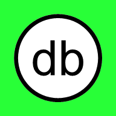

Buddy
Опыт трудных побед
Би — ваш ИИ-партнёр. Он помогает справляться с трудностями, находить решения и приобретать собственный опыт трудных побед.
Би
Как добавить русский голос
Android, в том числе Samsung
- «Настройки» → «Общие настройки» → «Преобразование текста в речь». На других телефонах этот пункт называется «Синтез речи» и находится в разделе «Язык и ввод».
- В пункте «Предпочтительный модуль» выберите «Синтезатор речи Google» (Speech Services by Google). Если его нет — установите «Speech Services by Google» из Google Play.
- Нажмите ⚙ рядом с ним → «Установить голосовые данные» → «Русский».
- Полностью закройте Buddy и откройте снова.
Названия пунктов немного отличаются в разных версиях Android.
iPhone и iPad
- «Настройки» → «Универсальный доступ» → «Устный контент» → «Голоса» → «Русский».
- Загрузите один из голосов.
- Полностью закройте Buddy и откройте снова.
Windows
- «Параметры» → «Время и язык» → «Речь» → «Добавить голоса» → «Русский».
- Перезапустите браузер.
Mac
- «Системные настройки» → «Универсальный доступ» → «Устный контент» → «Системный голос» → «Управлять голосами» → «Русский».
- Перезапустите браузер.
Установка
Buddy работает прямо в браузере — устанавливать не обязательно. Установка добавит значок на экран и позволит открывать Buddy как приложение.
iPhone и iPad
- Откройте эту страницу в Safari.
- Нажмите «Поделиться» — квадрат со стрелкой вверх.
- Выберите «На экран „Домой“» и нажмите «Добавить».
В iOS 16.4 и новее этот пункт есть и в меню «Поделиться» браузеров Chrome и Edge. Если его нет — откройте страницу в Safari.
Android
- Chrome: меню ⋮ → «Установить приложение» или «Добавить на главный экран».
- Samsung Internet: меню ☰ → «Добавить страницу на» → «Главный экран».
- Firefox: меню ⋮ → «Установить».
Если браузер предлагает установку сам, на этой странице появится кнопка «Установить сейчас».
Компьютер
- Chrome и Edge: значок установки в адресной строке или меню → «Установить Buddy».
- Safari на Mac (macOS Sonoma и новее): «Файл» → «Добавить в Dock».
- В остальных браузерах Buddy работает без установки, на вкладке.
Открыть на смартфоне
Наведите камеру телефона на код или откройте
jfeldman777.github.io/buddy
Условия работы и оплаты
- Знакомство с Би — бесплатно и без регистрации.
- Пробный разговор с ИИ — бесплатно, в небольшом объёме.
- Дальше нужен бюджет на ИИ: $5, $10 или $15. Его можно оплатить самому — переводом разработчику, который подтверждает платёж вручную. Или попросить разработчика оплатить участие — тогда он рассматривает просьбу и сам назначает лимит.
- Бюджет тратится только на запросы к ИИ. Вы всегда видите лимит, расход и остаток. Лимит никогда не увеличивается сам.
- Условия возврата неиспользованных средств будут показаны до перевода денег.
Сейчас идёт подготовка альфа-версии: разговор с ИИ и оплата пока не открыты.
Ваши данные
История разговоров и журнал поступков Би хранятся на вашем устройстве. Разработчик получает только то, что вы сами решите отправить.
Как Би обязуется себя вести — в декларациях Би. Что он сделал и почему — в журнале поступков Би.